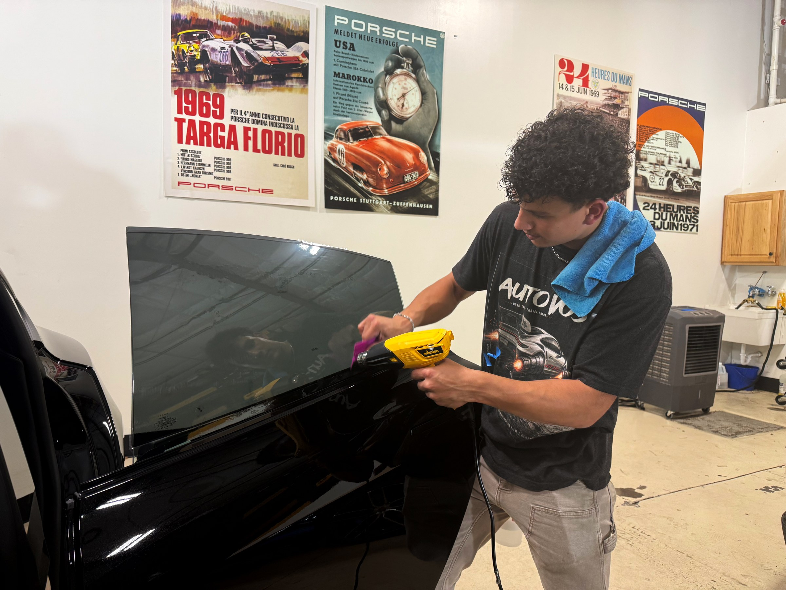

PPF vs. ceramic coating: which does my car need?
Choose PPF for help against small chips and scuffs. Choose ceramic coating for easier cleaning. You can use both.
Read the guide →
Guides & questions
Understand the products, compare your options and watch real installations.

Choose PPF for help against small chips and scuffs. Choose ceramic coating for easier cleaning. You can use both.
Read the guide →See how glass coverage, film choice and preparation affect your quote.
Read the guide →
Follow the video, exact stills and quality checks through the installation.
Read the guide →
Your next move
Tell us what you drive and what you have in mind.